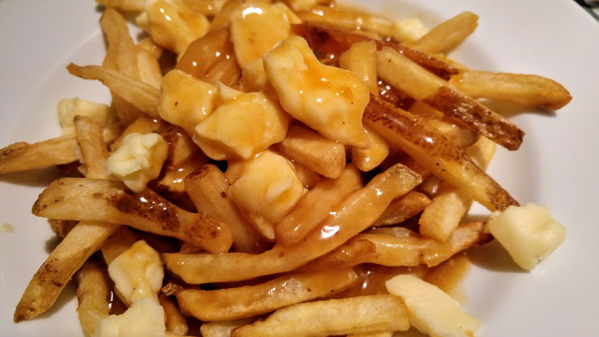

POUTINE RECIPE

DESCRIPTION
What other dish inspires a nation to advertize it as a culinary staple while also being a mess of hot garbage? That would be the Poutine: one of Canada's most (in)famous exports. This dish comes from the French part of Canada, also known as "Who the Fuck Cares". Some folks will claim that poutine has to be prepared correctly and needs to be authentic, but the same can be said about a diaper and both carry a similar substance. Nevertheless, once in a while a Canadian can't resist ordering one of these caloric nightmares, albeit regretting the decision afterwards 99% of the time, so here's how to make a "good" poutine.
Prep Time: 1-2hrs over 2-3 days
Cook Time:30 min
INGREDIENTS
- Potatoes
- Cheese Curds
- large plastic/impermeable container that will fit in your fridge or cold room
- stovetop and deep fryer/oil for deep frying
- Store-bought gravy/Powdered gravy
- salt & pepper to taste
STEPS
- Heat up oil for deep frying
- Julienne potatoes to desired thickness
- Par fry potatoes (cook until yellow but not fully cooked) and remove from oil
- Line the bottom of your plastic container with paper towel or cloth, then dump fries in. Cover with another layer of paper towel and plastic wrap, then into the fridge for a day or two.
- Contemplate the futility of your existence, observe as 24-48 hours elapse and your wordly contribution is nothing but a few turds in a septic tank... Watch Star Trek.
- Prepare the pre-made gravy however it's explained on the label. You can also make your own gravy, but that would be like adding au jus to a Big Mac, honestly....
- Re-introduce your par-cooked fries to the blistering inferno of your deep frier, and continue to cook until they are a darker yellow/almost brown. If they've gone hard and brown, you can dispose of it like the other hard, brown things you make.
- Place fries into a plate or bowl, introduce about a handful of cheese curds and a ladle full of shit gravy to this mutant heathen orgy of a dish.
- Consume (not recommended)
GO HOME